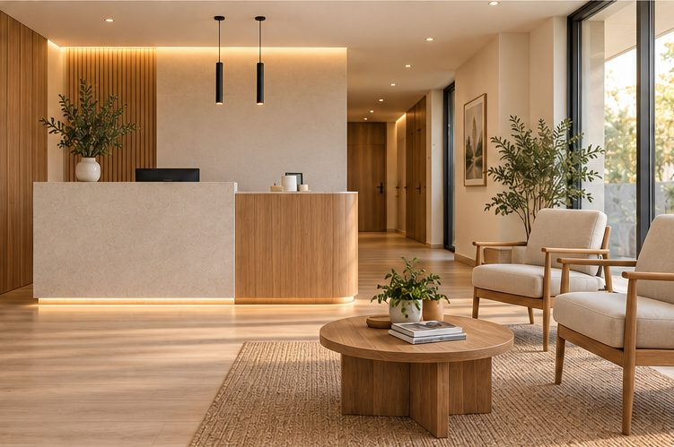
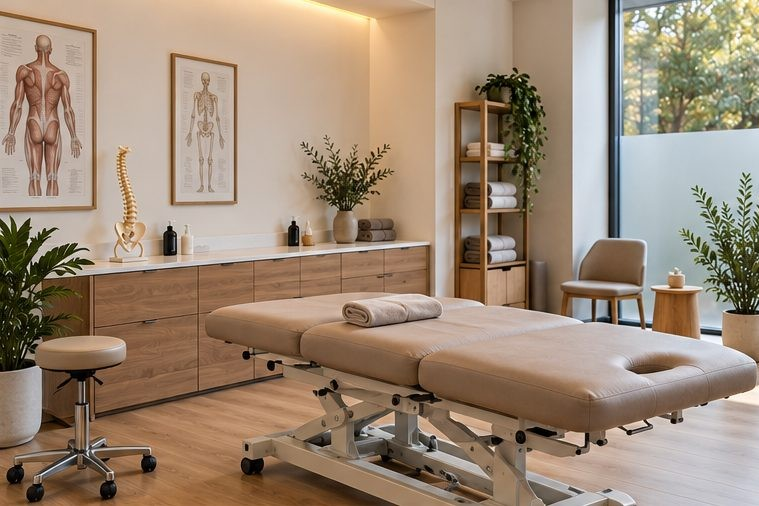
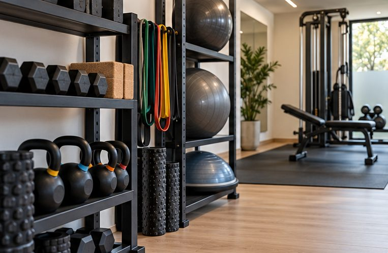

Instalaciones
El espacio donde ocurre el proceso
Recepción
Un espacio pensado para llegar con calma: el primer contacto con Tierra, antes de cualquier tratamiento.

Gabinetes de tratamiento
Tres gabinetes equipados para terapia manual, técnicas invasivas y ecografía, cada uno pensado para la atención individual que define el método de Tierra.

Área de rehabilitación funcional
Un espacio equipado para acompañarte durante todo el proceso de recuperación, desde las primeras fases hasta la vuelta a tu actividad habitual.
